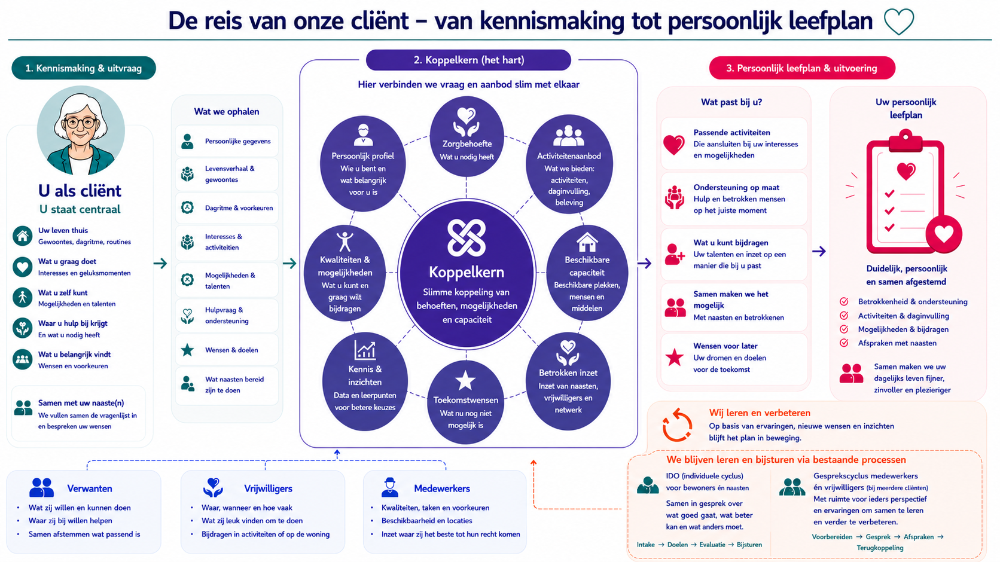

De reis van onze client
Technologie-laag — hoe InnovatieLab het zorgproces ondersteunt
Technologie-laag

Formulieren
Digitale vragenlijsten waarmee client en naasten samen het profiel
invullen. Gegevens worden direct verwerkt in het platform.
Gesprekken module
AI legt het kennismakingsgesprek vast.
Minder typen, meer aandacht
voor de client.
Activiteiten
Planningsmodule voor dorpspleinen, verenigingen en daginvulling.
Koppelt het aanbod aan interesses van bewoners.
Slimme Planning
Het hart van de koppelkern. Brengt zorgvraag,
beschikbaarheid en roosters samen.
Matcht de juiste mensen aan de client.
Locatiegram
Digitaal platform om locaties, kamers en ruimtes te beheren.
Per gebouw alle gegevens en beschikbaarheid bijhouden.
Informele ondersteuning module
Registreert vrijwilligers en naasten, houdt
beschikbaarheid bij en analyseert inzet.
Statistieken
KPI's en trends in een dashboard. Maakt zichtbaar
wat goed gaat en waar verbetering nodig is.
Schermen
Dagprogramma en mededelingen automatisch
zichtbaar op de afdeling.
Gesprekken module
Gesprekscycli medewerkers met management.
AI legt samenvatting en actiepunten vast.
Gesprekken + Statistieken
Evaluaties en data sturen het plan bij.
IDO-cycli en gesprekscycli vastgelegd.
×